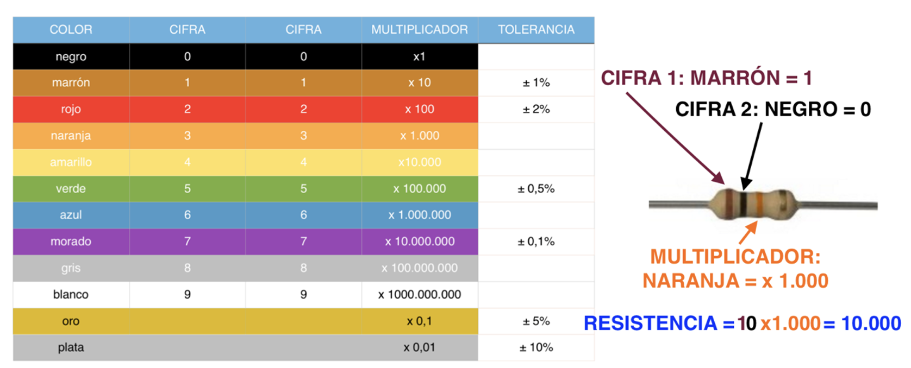
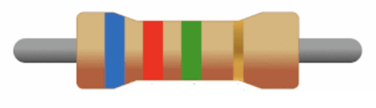
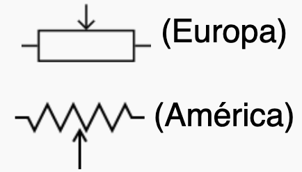
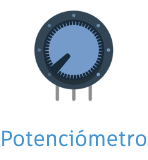
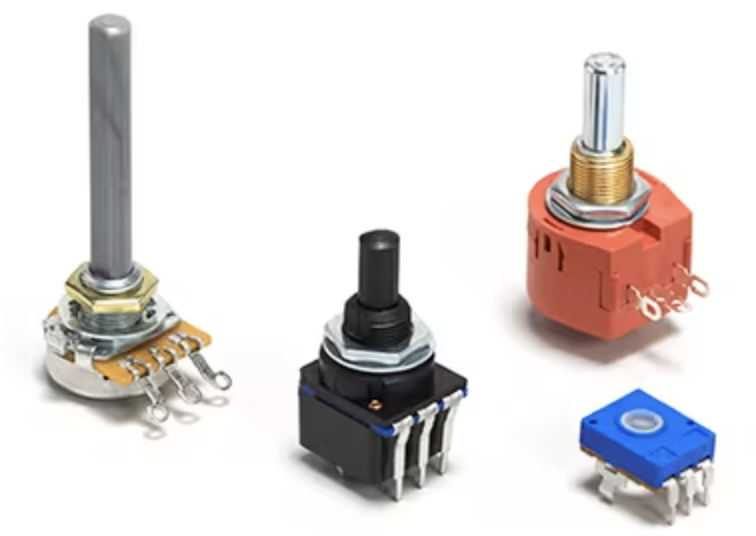
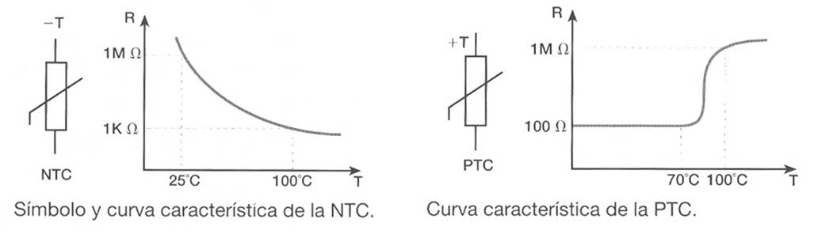
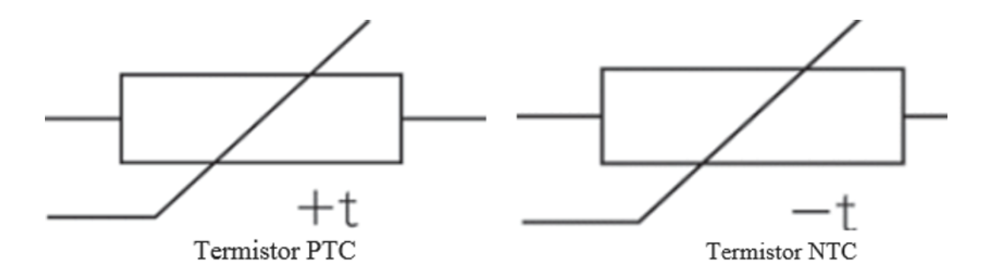
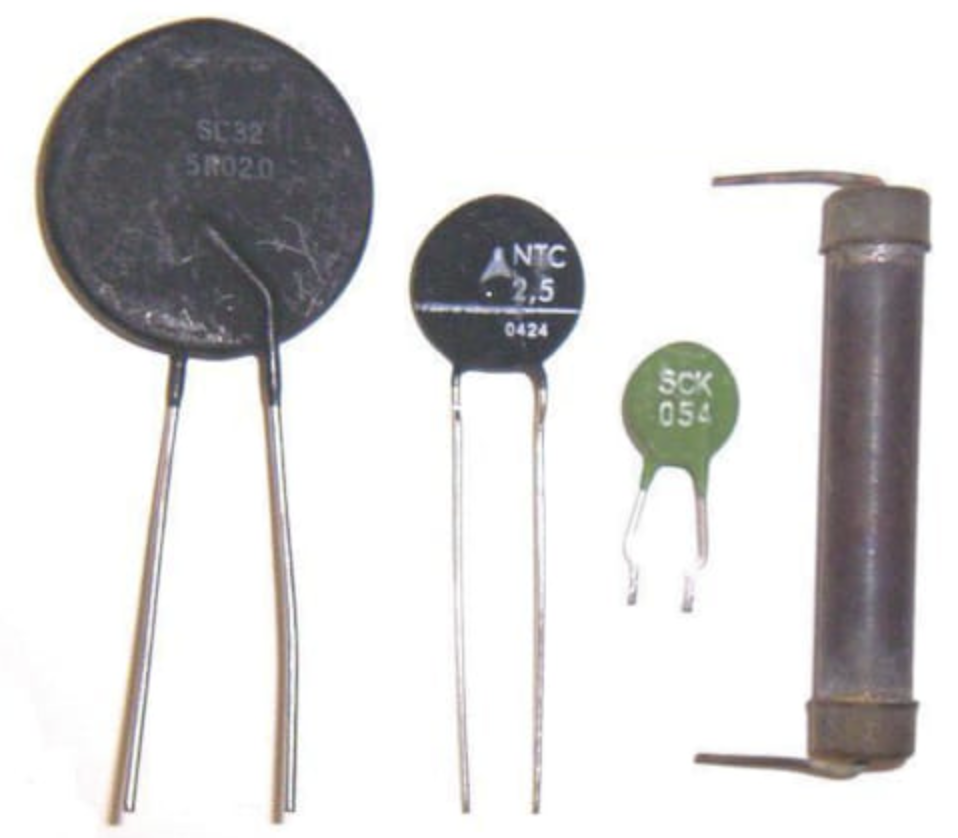

Resistencias electrónicas
La función de una resistencia es dificultar el paso de la corriente eléctrica, y como consecuencia producir una caída o pérdida de tensión entre sus terminales que acarrea una bajada en la intensidad de todo el circuito y a su vez una transformación de energía eléctrica en calor. La unidad de medida de la resistencia eléctrica es el ohmio, en honor al físico George Simon Ohm, y se representa con la letra griega omega (Ω).
Las resistencias se utilizan en electrónica para limitar la intensidad de corriente que pasa por una parte del circuito. Con una resistencia podemos limitar la corriente y, por consiguiente (ley de Ohm), el voltaje a que se ve sometido cualquier componente de nuestro circuito.
En electrónica usamos diferentes tipos de resistencias: fijas, variables y dependientes de la luz o de la temperatura.
Resistencias fijas (resistor)
El símbolo de una resistencia fija en un circuito eléctrico es el siguiente:
El primero es el símbolo americano y el segundo el europeo, aunque te encontrarás ambos constantemente. Nosotros utilizaremos uno u otro indistintamente, con la única condición de no mezclarlos en un mismo circuito (o usamos todos los símbolos de tipo americano o los usamos todos de tipo europeo).
Los valores característicos que definen a una resistencia son los siguientes:
• Valor óhmico nominal (RN): mide el grado de oposición al paso de la corriente y se expresa en ohmios (Ω). El valor puede estar indicado numéricamente en la superficie de la resistencia o mediante un código de colores.
• Tolerancia: indica los valores máximo y mínimo entre los cuales estará comprendido su valor real. Se expresa en forma de porcentaje del valor nominal. El valor máximo será el nominal más la tolerancia y el mínimo será el nominal menos la tolerancia.
• Potencia que puede disipar: indica la potencia máxima a la que es capaz de trabajar. Se mide en vatios (W). Los valores de potencia de una resistencia son valores normalizado.
El valor de la resistencia en las resistencias fijas que utilizaremos en nuestros circuitos viene expresado mediante unas bandas de colores. Aunque puede haber resistencias con 5 e incluso 6 bandas de colores, no trabajaremos con ellas en este curso. Nos centraremos en las de 4 bandas. Se puede calcular fácilmente el valor de una resistencia a partir de sus bandas, de la siguiente manera:
- La primera banda indica la primera cifra del valor nominal.
- La segunda banda indica la segunda cifra del valor nominal.
- La tercera banda indica el multiplicador, un número potencia de 10 por el que hay que multiplicar el número de dos cifras obtenido con las dos primeras bandas.
- La cuarta banda indica la tolerancia como porcentaje de la resistencia nominal. Si no existe esta cuarta banda (solo hay tres), se considera una tolerancia de ±20 %.
La equivalencia de colores a números se puede encontrar en una tabla como esta:

EJEMPLO RESUELTOVeamos un ejemplo resuelto de cómo calcular los valores característicos de una resistencia fija, dadas sus bandas de colores. Supón que tenemos una resistencia con estas bandas:  Queremos calcular sus valores de resistencia nominal, máxima y mínima.Primero obtenemos el valor nominal de la resistencia a partir de las 3 primeras bandas:
Por lo tanto, el valor nominal de la resistencia es:
A continuación, calculamos el valor óhmico de la tolerancia, utilizando el valor nominal y la cuarta banda:
Por lo tanto, el valor óhmico de la tolerancia será el 5 % del valor nominal: TOL = ±5% de 6,2 MΩ = ±6,2 · 5/100 = ±0,31 MΩ Así, podemos calcular los valores máximo y mínimo de la resistencia:
|
Resistencias variables (potenciómetro)
Son resistencias variables mecánicamente. Los valores de la resistencia del potenciómetro varían desde 0 Ω, el valor mínimo, hasta un máximo, que depende del potenciómetro. Suele usarse en paralelo con algún dispositivo para dividir la tensión que le llegue.
Los potenciómetros tienen 3 terminales. Entre los dos de los extremos sería como una resistencia fija, pero el terminal central (llamado cursor) puede variar su posición, con lo que la resistencia que queda respecto a los otros dos terminales va variando.
Normalmente el cursor se mueve girándolo, bien a mano mediante alguna palanca que tenga incorporada, o bien utilizando un destornillador.
Viendo el símbolo del potenciómetro podemos ver que es el mismo que el de una resistencia fija, pero con el tercer terminal (el cursor) en medio:

El potenciómetro en TinkerCAD lo puedes encontrar entre los dispositivos básicos y tiene este aspecto:

Sin embargo, en el mundo real puedes encontrar potenciómetros con diferentes aspectos, como puedes ver en estos ejemplos:

Resistencias dependientes de la luz (fotorresistencia o LDR)
Es un componente electrónico cuya resistencia se modifica, (normalmente disminuye) con el aumento de intensidad de luz incidente. Puede también ser llamado fotoconductor, célula fotoeléctrica o resistor dependiente de la luz (en inglés light-dependent resistor - LDR)
Su cuerpo está formado por una célula fotorreceptora y dos patillas. En la siguiente imagen se muestra su símbolo eléctrico:
En TinkerCAD, puedes encontrar el fotorresistor entre los componentes básicos. Tiene este aspecto, que es muy similar a su aspecto real:
 Debido a sus características, este tipo de resistencias suelen usarse como sensores de luz en los circuitos.
Debido a sus características, este tipo de resistencias suelen usarse como sensores de luz en los circuitos.
Resistencias dependientes de la temperatura (termistor)
Es un tipo de resistencia cuyo valor varía en función de la temperatura de una forma más acusada que una resistencia común. Su funcionamiento se basa en la variación de la resistividad que presenta un semiconductor con la temperatura.
Existen dos tipos fundamentales de termistores:
- De coeficiente de temperatura negativo (en inglés Negative Temperature Coefficient o NTC): disminuyen su resistencia a medida que aumenta la temperatura.
- De coeficiente de temperatura positivo (en inglés Positive Temperature Coefficient o PTC), los cuales incrementan su resistencia a medida que aumenta la temperatura.
Hay que tener en cuenta que la variación de la resistencia con la temperatura no es lineal. Aquí puedes ver algunas curvas que indican cómo varía la resistencia con la temperatura en una NTC y en una PTC típicas:

Como has visto, sus símbolos eléctricos son iguales, diferenciándose únicamente por el signo menos (-) en la NTC y el signo más (+) en la PTC:

En el mundo real, los termistores pueden tener diversos aspectos, aquí tienes algunos ejemplos:

Los termistores pueden utilizarse en circuitos electrónicos como protección contra el calentamiento o como sensores de temperatura.
Para resumir y también ampliar el contenido sobre resistencias, te dejo un vídeo donde puedes ver diferentes tipos de resistencias, como están construidas, como se miden,etc: